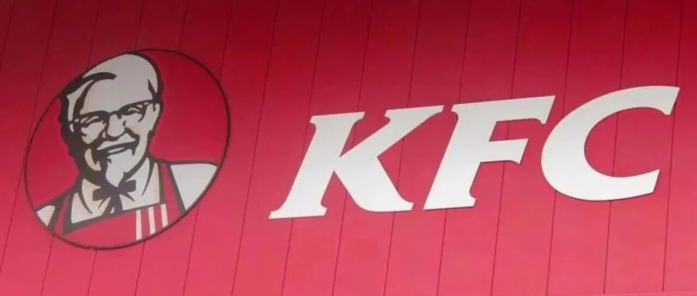

上周四（10月15日），美国肯德基一纸公告：从2027年1月起，全美约 4000家 门店的饮料供应商，将由百事换成可口可乐，预计2027年春季完成切换。这意味着双方长约 40年 的“绑定”暂告一段落。
反常的地方在于，肯德基和百事本就“同源”——1997年百胜餐饮从百事可乐分拆独立；而在1986年百事收购肯德基之前，肯德基恰恰就是可口可乐的客户。
所以这一换，不是“劈腿”，更像是“回娘家”。一杯可乐的供应权，到底藏着什么门道？
表面看只是换个供应商，实质是一笔渠道账。现调（fountain）是可乐利润最厚的渠道，没有之一——肯德基开在核心商圈、客流高频、家庭客群密集，等于可口可乐白捡4000个“每天几百万次曝光”的线下入口。
而百事这几年在现调渠道接连失守：万豪酒店、Costo美食广场之后，又少了一个40年的老客户。市场也用钱投了票——据媒体报道，消息公布当日可口可乐股价涨 0.24% 创历史新高，总市值一度突破 4000亿美元。
再看肯德基这边：美国快餐战场上，它的份额长期被麦当劳、Chick-fil-A挤压，官方把这次切换定义为“重振回归”（back-to-basics）的关键一步，意在吸引顾客回流。
一笔各取所需的交易：可口可乐要渠道，肯德基要回流。
最容易被忽略的是：10月16日，中国肯德基（百胜中国）明确回应——暂未接到通知，中国市场仍主要使用百事。
冰山之下，是特许经营的结构：百胜全球是“全球品牌、本地运营”，各国市场独立签饮料合约。中国的饮料生意，要看本地装瓶商（如康师傅代工百事）、本地口味、本地合约周期。美国4000家和国内上万家店，是两套完全不同的账本。
供应链话语权，从来都是本地账本地算——同一个品牌，杯子里的可乐可以不一样。
回到开头那杯可乐：40年一个轮回，从可口可乐客户，到百事资产，再回归可口可乐。
表面是“百事换可口可乐”，底层是特许经营下“全球品牌、本地算账”的系统能力。对投资人，这是确定性；对消费者，大概率是无感的一口汽水。